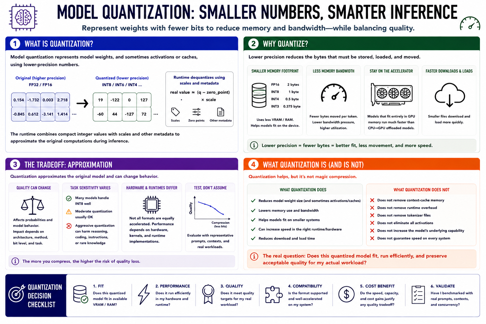

What Is Model Quantization?
Connecting to LMS... Progress: in progress

Narration
Model quantization represents weights, and sometimes activations or caches, with lower numerical precision. A model originally stored with 32-bit or 16-bit floating-point values may be converted so many weights use 8, 6, 5, 4, or fewer bits. The runtime combines those compact values with scales and other metadata to approximate the original computations during inference.
Lower precision reduces the bytes that must be stored, loaded, and moved through memory. That can make a model fit in limited VRAM or system RAM and reduce memory-bandwidth pressure during token generation. A model that remains fully on an accelerator may run much faster than a higher-precision version split between GPU and CPU. Smaller files also download and load more quickly.
The tradeoff is approximation. Quantization can alter probabilities and model behavior, with effects that depend on architecture, method, bit level, and task. Some models tolerate moderate quantization well; aggressive compression may damage reasoning, coding, instruction following, or rare knowledge. Hardware and runtimes also differ in which formats they accelerate efficiently.
Quantization is not magic compression. It does not remove context-cache memory, runtime overhead, tokenizer files, or every activation. It does not increase the model's underlying capability or guarantee speed. The useful question is whether a particular quantized artifact fits the target system, runs efficiently in the selected runtime, and preserves acceptable quality for the real workload.